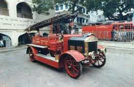

surat municipal corporation
welcome to our official web-site
welcome to our official web-site
The Bridge Cell of Surat Municipal Corporation carries out the following functions:
> Construction and maintenance of bridges within SMC limits
> Construction and maintenance of Culverts within SMC limits
> Construction and maintenance of Underpass within SMC limits
> Construction and maintenance of Flyovers within SMC limits
> Construction and maintenance of Road Over Bridges with SMC limits
BRTS for Surat is a multifaceted project which integrates land use and transport, various forms of public transport services as well as other motorized and non-motorized modes through various physical, operational and policy interventions to achieve the objective of making Surat an accessible and competitive city. Given this multi-dimensional nature of the project, anticipated impacts are numerous and some measurable and some qualitative.
The proposed Bus Rapid Transit System will be a high quality, ultra-modern and passenger oriented rapid transit system to deliver fast, comfortable, economical and eco-friendly mobility to urban dwellers. By introducing the BRT system, the overall traffic flow will improve as significant shift from privatized modes towards BRT system is expected. Based on a detailed assessment, it is recommended to develop a BRTS of around 29.7 km in phase-I and 58 km in phase 2.
An integrated transit system comprising of BRT, regular urban bus, regional bus and regional rail are envisaged to deliver the feeder services to meet with the needs of people of Surat.
The Traffic Cell of Surat Municipal Corporation perfoms its obligatory duty to provide traffic engineering aspects for regulating and controlling the traffic of the city with the mission of "Overall regulation and control of vehicles and pedestrian Traffic and Transportation, so as to provide safe and undelayed travel trip to the citizens.
The mian functions carried out by the cell are listed below:
> Traffic and Transportion surveys.
> Installation of Traffic Signals on road junctions and its maintenance.
> Construction of Chanalisers on the road junctions.
> Construction of Road Dividers either with R.C.C pardi or guard stones with a facility of plantations.
> To install automatic night blinkers at crtical curves, vehicular gaps, accident prone points etc. and its maintanance.
> Construction of Traffic Island (rotary) at road junctions.
> Installation of Traffic Sign Boards (cautionary mandatory, informatory etc.) and installation of sign boards indicating the names of new streets and squares.
> To construct Speed Breakers in consultation with Traffic police Department.
> To make Road Markings like Zebra crossings, Stop Lines, Junction Markings, Center Lines, Lane Lines etc. and to fix cat eyes on dark roads along the center line for enhanced visibility.
> Maintenance of Islands, Chanalisers, Road Dividerd by making minor repairs and painting them once in a year.
> To year – mark the spots for Rickshaw Stand, Bus Stand and Traffic related stuctures.
> Operating city Bus Transportion on PPP sinc Aug.-07 and up grade the said service.
> To Provide BRT mass transportation syatem.
The prime functions of the health department can be categorized into three broad groups as below:
> Health Preventive
> Health Curative
> Health Promotive
The Health and Sanitation department of Surat Municipal Corporation carries out a very broad spectrum of activities so as to improve the overall health of the citizens of Surat. The statistics of various disease incidences confirm the claim that the health of the citizens have been improving due to relentless efforts of the Health Department of SMC.
The registration of the births and the deaths within SMC limit is by law duty of Surat Municipal Corporation. This activity is presently entirely computerized and the benefit of the same can be availed from any of the zone offices. Some of the important information relating to the process of birth and death registration are as listed below:
> Registration of Birth within 21 days of birth as well as incidence of death within 21 days from the death without fee, and after 21 days of birth and after 21 days of death, but within 30 days, the birth registration can be made by paying Rs. 2=00 as delayed fee. Further, after 30 days, but within one year the unregistered birth & death can be made on payment of Rs. 5=00 as delayed charges, by execution of an affidavit before the executive magistrate. However, previous sanction of the commissioner shall have to be taken.
> The registration of unreported birth & death shall be made with an affidavit executed before the Executive Magistrate (FC) and on payment of Rs. 5/- as a delayed fee.
> In the case of registered birth, the name of the child can be entered within a year without fee, as well as in cases of birth registered from first year to 15th year, the name can be entered on payment of Rs. 2=00 as delayed fee. In case of non-reporting of names within 15 years, the same can not be entered in any circumstances.
> First copy of such birth & death is given free of cost within one year.
> For additional copy of birth & death, an application in prescribed form shall have to be made.
> On payment of Rs. 1=00, a copy of birth & death certificate is available in Gujarati or English.
> For registering the birth & death, all the information in detailed proforma, in a readable and clear manner have to be furnished.
> In the birth registration, once the name of child is entered the same can not be amended in any nature and no other (alias) name can be attached to it.
> At the time of death, the name of deceased is certain. Therefore the name prevalent in the day today transactions be dictated. Once the deceased's name is written, it can not be amended in any nature, nor any other (alias) name can be attached to it.
> At the time of school admission, the birth certificate is compulsorily required. Therefore,
it is necessary to obtain birth certificate of your child. Rush is always there during November to
January every year for getting certificates. Therefore, it is requested to obtain the same before
Objectives for an innovative & modern Solid Waste Management
> To devise a system of storage of waste and segregation of recyclable waste at source.
> To improve system of primary collection of waste.
> To devise more efficient system of day to day cleaning, conventionally and mechanically.
> To devise system to eliminate practices of throwing garbage on the road causing nuisance & health threat.
> To modernize the system of community waste storage & synchronize the system of primary collection as well as transportation of waste.
> To eliminate manual handling of waste and open transportation vehicles.
> To improve the system of transportation of waste by ensuring "handling waste only once".
> To construct four more semi close body transfer station to strengthen the existing primary collection-transportation and secondary transportation system.
> To reduce quantity of waste going to landfill site by adopting suitable technology.
> Land to be acquired for other landfill disposal site.
> To derive income from the processing of waste.
> To ensure proper processing of MSW by means of Centralized and Decentralized Processing treatment units.
> To ensure safe disposal of waste including bio-medical waste, C & D Waste, E-Waste and other Special category waste
> To do institutional strengthening.
> To have public participation in order to have proper segregation and efficient collection system.
Surat Fire Brigade came into existence in the year 1852, which were separately functioning under the control of Surat Sudhrai. fire and emergencyservices vehicle in the year 1852 At that time, Surat Fire Brigade had only 01 fire stations and 04 fire vehicle and in 1966 under administrative control of Surat Municipal Corporation, Surat . The fire service continues to make sincere endeavour by responding to approx 2200 fire/rescue calls per annum on an average to serve the people of Surat City with the sole motto "WE SERVE TO SAVE".

1. Fire Fighting
2. Rescue & relief work during flood, earth-quake & other Natural & man -made disaster
3. Site inspection for issuing fire NOC
4. To issue fire certificate
5. To provide services of Ambulance & Dead body van to public
6. Stand-by duty during religious Festival and Public Programmes
7. Stand - by duty during visit of VIP & V VIP.
The Surat Fire & Emergency does not levy any charges for the fire fighting and rescue services provided to the community within the SMC city limit Surat. The Deptt. however recovers service charges if the fire engines are required to be sent outside the limits of SMC or in case if a fire engine is hired for public or private functions. It is, therefore, for the information of general public that no fees/charges are required to be paid by anyone for the services rendered by the fire service.
The standby duty (positioning of a water tender) is a service offered by the Surat Fire & Emergency Services on demand from the public subject to availability of fire tenders. This service shall be on chargeable basis .The persons desirous of availing the services may apply to the Chief Fire Officer stating the expected number of people participating in the function/ceremony, the hazardous conditions that are likely and charges are payable by DD /Payorder on the name of Municipal Commissioner Surat Municipal Corporation, Surat on any working day.
Fire and EmergencyServices awareness sessions in public
a) In case of Fire
1. Raise an alarm and inform the Fire Brigade on Telephone No. 101
2. Attack the fire with available equipment, if you can do so without undue risk.
b) If you hear the Fire Alarm
1. Leave the premises by the nearest available exit.
2. Close all doors and windows behind you.
3. Report to the person incharge at the assembly point.
c) In the interest of Your Own Safety
1. You must know the escape routes, how to operate fire alarm and how to use first aid fire fighting equipments.
2. Do not use lift as a means of escape.
3. Do not shout or run. This tends to cause panic.
4. Call the Fire Brigade
5. The services of the Fire Brigade are provided free of cost Dial 101 irrespective of the size of the fire.
6. You do not need a coin to communicate on this number, even when you use the P.C.O.
d) Help the Firemen to Help You
1. Give way to fire engines to enable them to reach at the incident quickly.
2. Allow them to use your telephone to communicate with the control room.
3. Don’t park your cars/truck close to fire hydrants/underground static water tanks.
4. Guide firemen to water sources ie. Tube wells, pounds, static tanks etc. in case of fire.